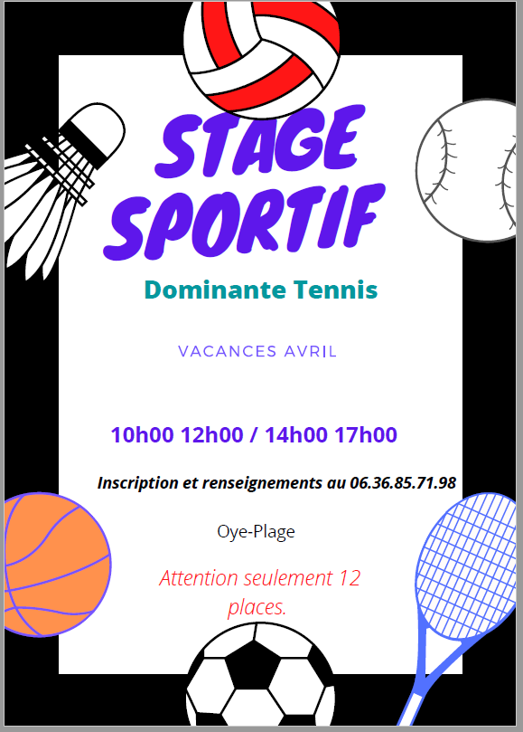

Nous vous attendons nombreux pour une nouvelle session de stage sportif qui aura lieu du 9 au 23 avril. Les passages de niveaux seront effectués le vendredi de chaque semaine. Il y a 10 places pour chaque semaine, soit à la journée avec la possibilité de manger son repas sur place (repas non inclus) ou à la demie journée, soit le matin soit l'après-midi Les tarifs restent inchangés et sont de 60€ la semaine en journée complète, 40€ la semaine en demie-journée. Pour vous inscrire n'hésitez pas à contacter notre éducatrice sportive Camille par téléphone ou par mail.
 Tennis Club de Oye Plage
Tennis Club de Oye Plage